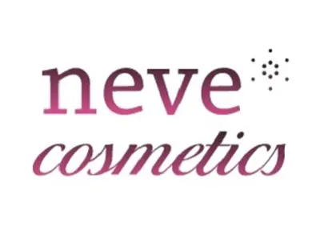
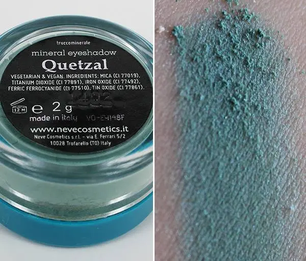
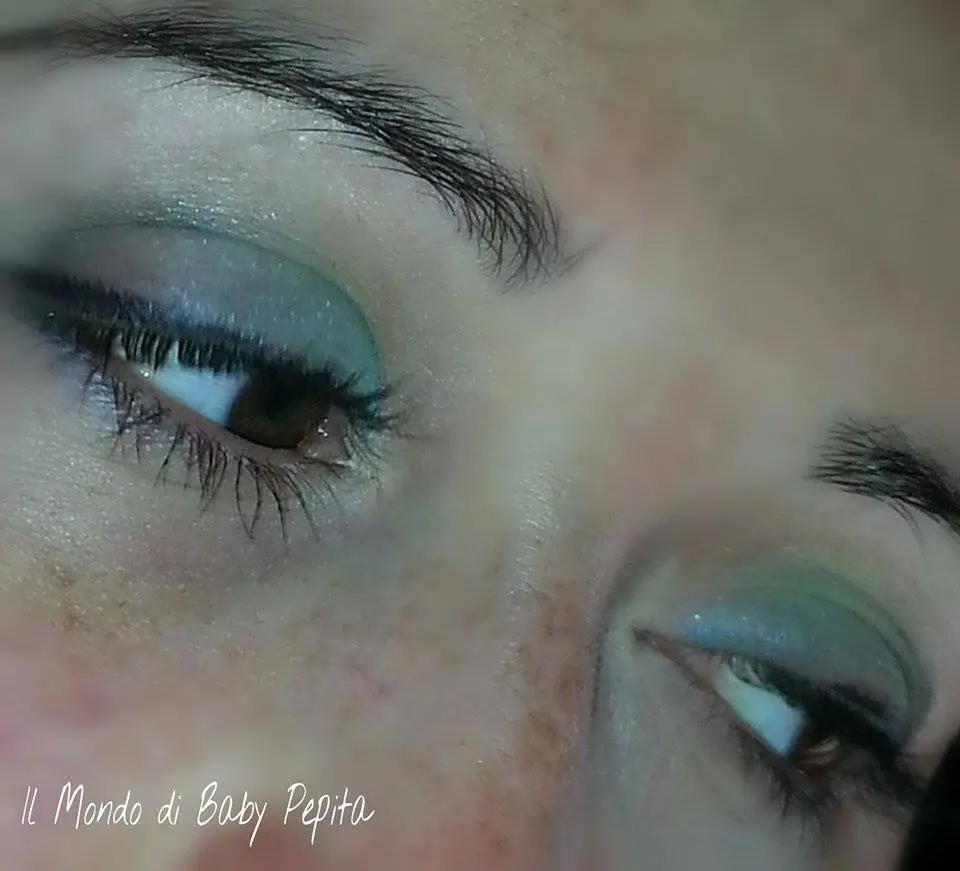

Neve Cosmetics - ombretto Quatzalcoatl - Opinione
Heilà bellezze
Oggi partiamo direttamente a parlare di Neve Cosmetics

Ahimè non ho molte cose di questa azienda, ma volevo comunque parlarvi di quest'ombretto che non avevo ancora provato, ce l'avevo accantonato lì perché non sapevo come abbinarlo.
Collezione make up primavera estate 2014 Quetzalcoatl e trae ispirazione dai colori suggeriti dal Messico e prende il
nome dal mitologico serpente piumato.
Questa collezione è formata da 4 ombretti ossia:
● Rituale: un viola prugna con satinatura che va sull'indaco.
● Peyote: Polvere di cristalli trasparenti con esotici riflessi verde lime.
● Desert: Marrone paprika caldo con riflessi dorati.● Quetzal: Duochrome verde piscina con satinatura azzurro pervinca.
Quello che ho io è quetzal, un verde acqua che tende all'azzurro.
Ho provato ad usare questo ombretto in polvere asciutto.
In pratica è un incrocio, se così si può dire, tra un verde acqua e azzurro .
Quando lo stendete asciutto come ho fatto io, diventa un verde acqua nemmeno tanto scrivente. . Sono sincera non mi ha incantata. .

Devo ancora provarlo però da bagnato e so che in quel caso sarà un bell'azzurro vivace a prendere scena. .Quindi in questo caso poi ve ne riparlerò anche dell'effetto bagnato.